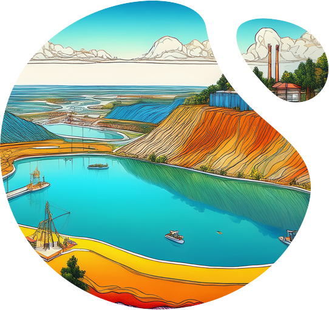

Mine closure works best when it is not treated as a single event at the end of a mine's life.
Integro treats it as three things running at once — data, active reclamation,
and abandoned-site restoration — held together by one integrated delivery model,
and closed out by a safety standard that never gets compromised for speed.
Integro builds a centralised data layer covering every active, terminated, abandoned and reclaimed site — status, geology, waste, water, and the closure obligations attached to each. This is the record that lets a lessee, a regulator, and Integro look at the same site and agree on what stage it's actually at.
Extraction waste management, soil treatment, region-based air and water treatment, and landscape development — applied to sites where mining has already stopped. Where the land supports it, this becomes passive ecosystem restoration; where it doesn't, technical reclamation repurposes the site for agriculture, wildlife habitat, ecotourism, or institutional use.
The same core disciplines — waste management, soil treatment, air and water treatment, landscape development — but run concurrently with ongoing extraction. Closure planning starts on day one, not on the last day.
These three don't happen in sequence. A mine can be actively producing, generating reclamation data, and restoring an adjacent abandoned block, all in the same year.

Every site gets one clear, agreed answer to a single question: what should this land look like when mining stops? That answer is set before extraction begins, and built into daily operations — not drafted afterward as a compliance formality.
Three checks run ahead of any commitment:
— Whether the site sits in a climate-vulnerable region that warrants extra caution.
— What conflict-resolution work the mineral reserve will require, given the geopolitics that surround it.
— How the full supply and distribution chain holds up under ecological assessment.
A reclamation project is complex and draws on a specific set of 25 disciplines, not a vague "many hands" description:
Geology, Meteorology, Hydrology and Water Resources Engineering, Agronomy, Extraction Waste Management (storage, treatment, recycling).
Chemical Engineering, Mechanical Engineering, Architectural Design, Biophilia Design, Sustainable Structure Design, Landscape Design, Service Engineering.
Energy Management, Kinetic Energy Generation, Storage & Distribution, Hydel & Wind Energy Generation, Storage & Distribution, Industrial IoT.
Logistics, Safety, Quality & Supervision, Rural Community Management, Finance, Human Resources, Public Affairs.
Reclamation work usually gets sourced piecemeal — 25 separate relationships, 25 separate reporting lines, with no single point accountable for how they add up. Integro runs all 25 against one Industrial IoT backbone instead: one data layer for connectivity, analytics and optimisation, shared across every discipline in real time, so the data from Reliable Data and the strategy from Closure Planning actually get built — instead of sitting in 25 separate reports that never talk to each other.
The people living around a mine outlast thmine. Township and community outcomes are built into the closure plan itself — not CSR bolted on afterward.
Kinetic, hydel and wind energy — generation, storage and distribution — designed into the reclaimed landform itself.
The same data and monitoring backbone that runs reclamation doubles as live safety infrastructure: pre-alarm and accident analysis, ventilation monitoring, tailing dam monitoring, fleet and personnel management — built to meet and stay ahead of Directorate General of Mines Safety requirements. Advisory and systems, together, on one dataset. Everything above this depends on this section holding.